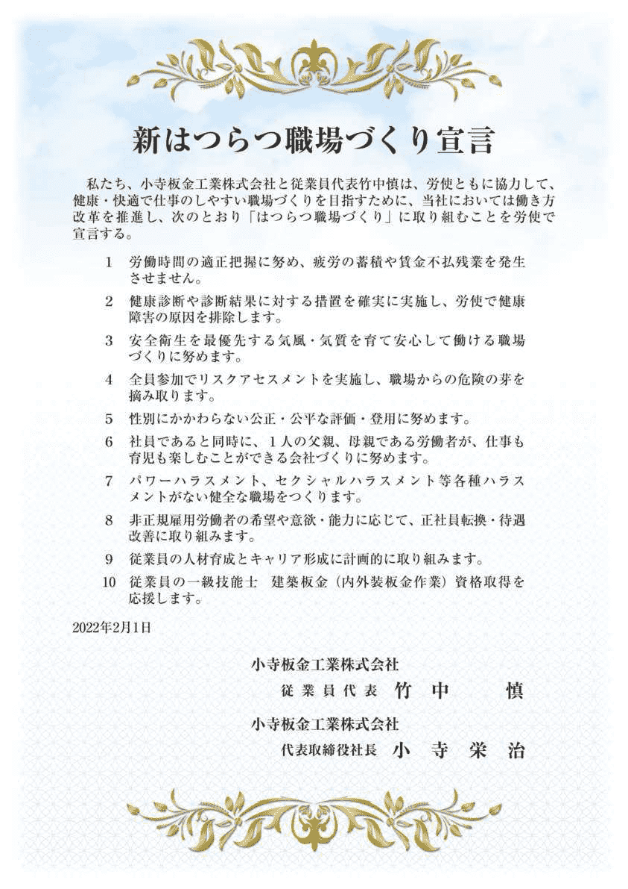
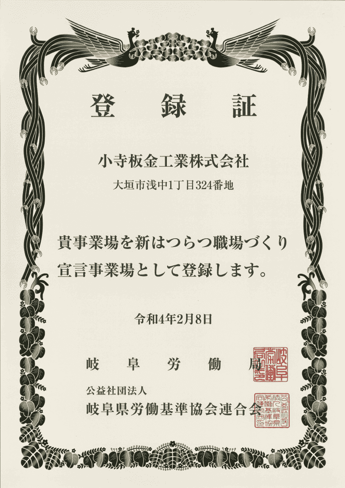

新はつらつ職場づくり宣言事業場です
新はつらつ職場づくり宣言（以下「はつらつ宣言」）とは、快適で仕事のしやすい職場づくりを目指すことを企業と従業員が共同で宣言するものです。岐阜労働局によって定められた重点項目の内容に従い、企業ごとに独自の宣言を行います。
はつらつ宣言の詳細に関しては岐阜労働局のサイトに掲載されています。
重点項目として定められている内容は、はつらつと働くことのできる職場には非常に重要なものであり、当社はその内容に強く賛同します。そこでこの度当社は、その重点項目に沿った形で、「はつらつ職場づくり」に取り組むことを宣言し、岐阜労働局に登録されました。


以下に示す10の項目に取り組むことを宣言いたしました。
- 項目1：長時間労働の抑制および過重労働の解消労働時間の適正把握に努め、疲労の蓄積や賃金不払い残業を発生させません。
- 項目2：心身ともに安全で健康に働ける職場環境健康診断や診断結果に対する措置を確実に実施し、労使で健康障害の原因を排除します。
- 項目3：心身ともに安全で健康に働ける職場環境安全衛星を最優先する気風・気質を育て安心して働ける職場づくりに努めます。
- 項目4：心身ともに安全で健康に働ける職場環境全員参加でリスクアセスメントを実施し、職場からの危険の芽を摘み取ります。
- 項目5：多様な人材の活躍性別にかかわらない公正・公平な評価・登用に努めます。
- 項目6：仕事と家庭の両立支援対策社員であると同時に、1人の父親、母親である労働者が、仕事も育児も楽しむことができる会社づくりに努めます。
- 項目7：各種ハラスメントの防止対策パワーハラスメント、セクシャルハラスメント等各種ハラスメントがない健全な職場をつくります。
- 項目8：非正規雇用労働者の待遇改善非正規雇用労働者の希望や意欲・能力に応じて、正社員転換・待遇改善に取り組みます。
- 項目9：人材育成・キャリア形成のための支援従業員の人材育成とキャリア形成に計画的に取り組みます。
- 項目10：人材育成・キャリア形成のための支援従業員の一級技能士建築板金（内外装板金作業）資格取得を応援します。
こちらの宣言内容は岐阜労働局のサイトにも掲載されています。
創業より当社では、常に安全衛生を最優先して業務に励んでまいりました。業務の性質上危険が伴う作業もありますが、だからこそ従業員の安全は最優先に考えるべきだと認識しております。
項目3および項目4の宣言内容はこの安全最優先の姿勢を反映したもので、とりわけ重要なものだと考えております。
項目3および項目4の宣言内容はこの安全最優先の姿勢を反映したもので、とりわけ重要なものだと考えております。
毎朝行う当社での朝礼にて、社長から従業員へ声掛けすることで安全に対する意識を高めています。
そして各現場で行われる朝礼に参加します。まずラジオ体操などの準備運動をしてケガの予防に努めます。また危険予知活動も行います。当日の作業においてどんな危険があり、どのように対策するか全員で確認し事故を未然に防ぐよう努めています。
そして各現場で行われる朝礼に参加します。まずラジオ体操などの準備運動をしてケガの予防に努めます。また危険予知活動も行います。当日の作業においてどんな危険があり、どのように対策するか全員で確認し事故を未然に防ぐよう努めています。
また、当社では従業員全員に対して一級建築板金技能士資格の取得を推奨しております。従業員が高度な技術を身につけ資格取得することは、当社にとって有益であるだけではなく、従業員自身のキャリアアップにつながるという観点から非常に大切であると考えております。
この考え方を反映したものが項目9および項目10の宣言内容です。今後とも、資格取得希望者に対して全面的に支援を行い、従業員のキャリア形成に努めてまいります。
この考え方を反映したものが項目9および項目10の宣言内容です。今後とも、資格取得希望者に対して全面的に支援を行い、従業員のキャリア形成に努めてまいります。
はつらつと働くことのできる職場づくりに貢献できるよう、全社で努めてまいります。